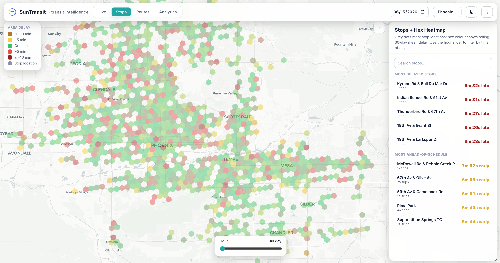
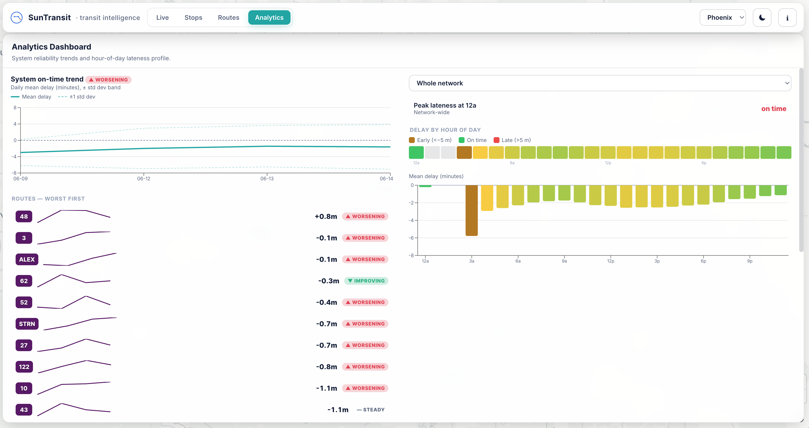
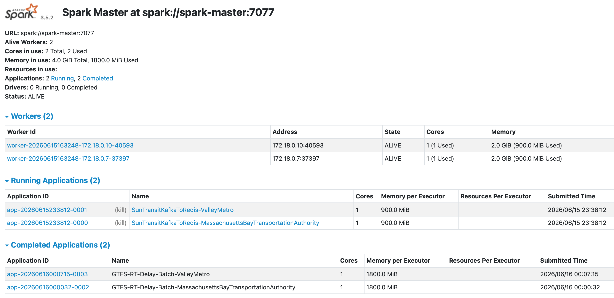

1. Data product
A structured historical record of how each trip actually performed against schedule. This is the analytical backbone of the project and the piece that becomes most useful for deeper reliability studies.
Case Study · Transit Intelligence
A real-time public transit tracking and performance analytics system that turns GTFS-Realtime feeds into live vehicle visibility, stop-level delay analysis, and reusable historical datasets.
Transit agencies currently integrated into the pipeline.
Vehicle-location messages processed each day from continuously polled GTFS-Realtime feeds.
Delay tracking compares actual arrivals against scheduled trips.
Historical trip records are stored for later analysis and research.
Tech Stack
 SageMaker
SageMaker
Problem
Transit riders usually see fragments of the picture: a static route plan, an ETA, or a map that does not explain whether the system is actually performing well. SunTransit closes that gap by combining live location feeds with schedule-aware delay computation.
The result is a system that behaves like a transit operations lens. Riders can see where buses and trains are right now, while planners and researchers can inspect reliability patterns over time at the stop, trip, and agency level.
Architecture
SunTransit continuously ingests transit updates, normalizes them against scheduled service, and computes stop-level delay signals that can be explored both live and historically. The core design goal is simple: keep the real-time experience responsive while preserving a structured data product for later analytics.
This makes the project both an application and a data platform. One side serves an interface for live monitoring; the other side builds a durable dataset that can support research, reliability analysis, and future product extensions.

The platform ingests transit data, processes it into schedule-aware events, and exposes both a live monitoring experience and a historical performance dataset.
Machine Learning
Measuring delays after the fact is useful — predicting them is better. SunTransit now forecasts how late a vehicle will be at each of its upcoming stops, so the dashboard can show schedule-aware ETAs instead of naive timetable times.
A gradient-boosted model (LightGBM) is trained and served entirely on AWS SageMaker. A monthly pipeline preprocesses historical trip records, trains a candidate model, and only promotes it if it beats the previous accuracy bar — then serves it from a scale-to-zero serverless endpoint the API queries in the background.
Interface
A continuously updating map surface for watching active buses and trains move through the network in real time.

A stop-level and H3 hex view of where delays accumulate, making reliability issues much easier to spot than raw event logs or tables.

System-wide on-time trends, hour-of-day delay profiles, and per-route performance ranked worst-first — giving operators and researchers a clear reliability picture.

The Spark Master UI showing live workers and submitted jobs — both the streaming Kafka→Redis jobs and the completed hourly batch delay calculations.
Outputs
A structured historical record of how each trip actually performed against schedule. This is the analytical backbone of the project and the piece that becomes most useful for deeper reliability studies.
A live interface that surfaces current vehicle positions and transit performance in a way that is immediately readable for both operators and end users.
A SageMaker-served model that turns the historical dataset into forward-looking arrival predictions, closing the loop from measurement to forecasting.
Access
If you are working on transit analytics, urban systems, or downstream modeling and want access to the historical dataset, reach out directly. The project was built with reuse in mind.
The only requirement is attribution if the dataset is used in a project, paper, or public release.
Project links
The repository contains the implementation details. For collaboration, dataset access, or portfolio context, use the links here.